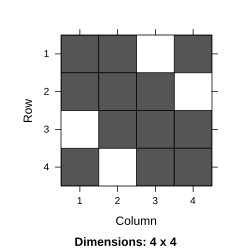
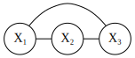
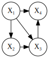
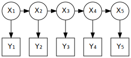

11 Sparsity
Large random effect models require sparsity in order to work in TMB. In this section we will discuss:
- What exactly we mean by sparsity.
- How to formulate sparse models (the same model can sometimes be formulated as both dense and sparse).
- How to calculate the sparsity pattern of a given TMB model.
- How to visualize sparsity either as a matrix or a graph.
- How to use sparsity for general optimization problems (not just random effects).
11.1 Conditional independence graphs and DAGs
11.1.1 Conditional independence
There are various graph representations that are commonly used to visualize probabilistic structure. One such is the conditional independence graph. Say we have a model of four random variables \(X_1,...,X_4\) for which the joint density is:
\[p(x_1,x_2,x_3,x_4) \propto f_1(x_1,x_2)f_2(x_2,x_3)f_3(x_3,x_4)f_4(x_4,x_1)\]
The separability of factors on the right hand side implies some conditional independence properties. For instance if \(x_1\) and \(x_3\) are held constant then \(x_2\) and \(x_4\) varies independently. We say that \(x_2\) and \(x_4\) are conditionally independent given \(x_1\) and \(x_3\). The conditional independence graph is defined by drawing undirected edges between variables occurring in the same factor \(f_i\):

Equivalently the graph may be visualized via its adjacency matrix:

This is the sparsity pattern of the model.
The sparsity pattern visualizes the conditional independence structure of the random effects in the model.
11.1.2 Node removal properties
Important probabilistic properties can be deduced directly from the graph. This is due to the following node removal properties.
The conditional distribution given node \(X_i\) is found by removing \(X_i\) and its edges from the graph. For instance conditional on \(X_4\) we get the following graph:

The marginal distribution wrt. a node \(X_i\) is found by removing \(X_i\) from the graph and connecting all \(X_i\)’s neighbors. For instance when integrating \(X_4\) out of the joint density we get the following graph for the remaining nodes: 
Conditioning preserves sparseness. Marginalizing tend to destroy sparseness by adding more edges to the graph.
11.1.3 Directed acyclic graph
When building models in TMB it is often more natural to specify processes in incremental steps - i.e. through the successive conditional distributions. The previous example could be simulated by drawing the variables \(X_1,X_2,X_3,X_4\) one by one in the given order as illustrated by the following directed graph:

The graph shows dependencies of any specific node given past nodes. The edge from \(X_1\) to \(X_3\) was not in the original (undirected) graph. This is a so-called fill-in.
Order matters. The DAG is different from the conditional independence graph.
11.1.4 The effect of adding data
It is convenient to use a box-shape for nodes that represent data. For instance if we pretend that \(X_4\) is a data point we would illustrate it by:

Here there are only three variables left. The conditional independence structure of the variables is:

which is the same graph as was previously found by integrating \(X_4\) out of the joint distribution.
Data nodes destroy sparsity the same way as marginalization. To avoid this, try to associate each data point with a single random effect.
11.2 The theta logistic example
Consider the ``theta logistic’’ population model (Pedersen et al. 2011). This is a state-space model with state equation
\[u_t = u_{t-1} + r_0\left(1-\left(\frac{\exp(u_{t-1})}{K}\right)^\psi\right) + e_t\]
and observation equation
\[y_t = u_t + v_t\]
where \(e_t \sim N(0,Q)\), \(v_t \sim N(0,R)\) and \(t\in \{0,...,n-1\}\). A uniform prior is implicitly assigned to \(u_0\).
The joint negative log-likelihood of state vector \(u\) and measurements \(y\) is implemented in the C++ template thetalog.cpp. The example can be run by:
runExample("thetalog", exfolder="adcomp/tmb_examples")We demonstrate it in the case \(n=5\). Here is the DAG
## Optimizing tape... Done
This is a standard hidden Markov structure. Each data node is bound to a single random effect - hence the data does not introduce additional edges in the random effect structure.
We can use the image function from the Matrix package to plot the random effect structure (we must first load the Matrix package):
library(Matrix)
obj <- MakeADFun(data, parameters, random=c("X"), DLL="thetalog")
image(obj$env$spHess(random=TRUE))## Optimizing tape... Done
FIXME: NOT DONE YET !
References
Pedersen, Martin Wæver, Casper Willestofte Berg, Uffe Høgsbro Thygesen, Anders Nielsen, and Henrik Madsen. 2011. “Estimation Methods for Nonlinear State-Space Models in Ecology.” Ecological Modelling 222 (8). Elsevier: 1394–1400.